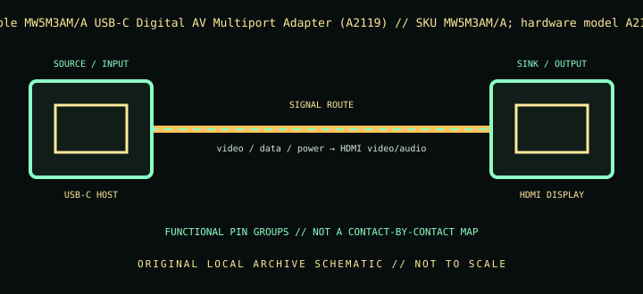

[ INDIVIDUAL COMPONENT // CABLES & ADAPTERS ]
Apple MW5M3AM/A USB-C Digital AV Multiport Adapter (A2119)
Apple’s USB-C multiport adapter adds HDMI display output, USB-A connectivity, and USB-C charging pass-through; the HDMI timing depends on the adapter hardware model and host.

IDENTIFICATION: Catalog SKU: MW5M3AM/A; hardware model A2119. Record the complete label, regional suffix, hardware model/revision, and cable length printed on the specimen; nearby model variants are not interchangeable by assumption.
Specifications & connector revisions
| Catalog subcategory | Display cables and adapters |
|---|---|
| Manufacturer / SKU | Apple MW5M3AM/A USB-C Digital AV Multiport Adapter (A2119) — MW5M3AM/A; hardware model A2119 |
| Connector ends / length | USB-C male host plug → HDMI Type-A female, USB-A female, and USB-C female charging port; attached short lead, length not specified in cited support documentation. |
| Protocol and revision | Apple identifies hardware model A2119 as supporting up to 3840 × 2160 at 60 Hz on compatible Macs/iPads, while older A1621 units are limited to 4K30 or 1080p60. HDMI cable is separate. SKU MW5M3AM/A is the retail listing; inspect the adapter/box model marking because visually similar revisions have different limits. |
| Signal path / pinout | Host USB-C supplies the supported video path and adapter data/power; HDMI Type-A female connects the display, USB-A female serves peripherals, and USB-C female accepts charging. HDMI is HDCP compliant. This is an integrated multiport adapter, not a passive four-way pin splitter. |
| Mode and bandwidth caveats | The retail part number and hardware model are different identifiers: record both. HDMI timing is model- and host-dependent; an HDMI cable or display that cannot accept the selected mode will reduce output. Charging pass-through needs a suitable USB-C PD supply and does not raise the host’s own charge limit. |
Compatibility & direction
Use with an Apple or other host documented to support video over its USB-C port; Apple’s support article ties A2119 4K60 support to specific macOS/iOS revisions and compatible device models. Connect an HDMI 2.0-capable cable for the 4K60 combination. A1621 revision has lower maximum mode; confirm the marking before planning a 4K60 installation.
Handling & archival notes
Keep the stated source and sink ends in their specified direction; do not force keyed connectors or use this product as an assumed voltage/pinout substitute for a superficially similar cable. Support the tether during connection, keep contacts clean and dry, and avoid tight bends at molded strain reliefs.
For the archive, photograph both connector faces, labels, packaging SKU, length, and revision. If a mode is tested, record source model/GPU and firmware, sink model/firmware, intermediate adapters, cable run, resolution, refresh rate, chroma/HDR, and whether HDCP succeeds. Test results apply to that exact chain, not all variants.
Manufacturer and standards sources
- Apple — USB-C Digital AV Multiport Adapter, MW5M3AM/AManufacturer retail listing for adapter and port functions.
- Apple Support — About the USB-C Digital AV Multiport AdapterManufacturer support documentation distinguishes model A2119 from A1621 and lists host-dependent resolutions.
Maximum modes are source-, sink-, firmware-, signal-path-, and revision-dependent. Manufacturer documentation for the exact SKU and hardware model takes precedence over family names and connector appearance.